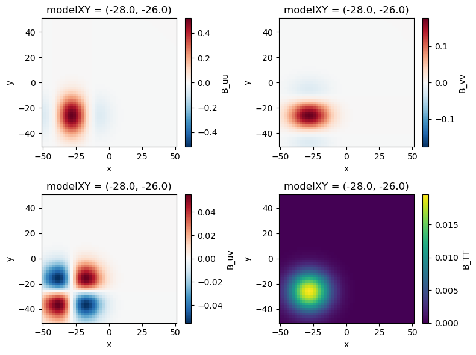
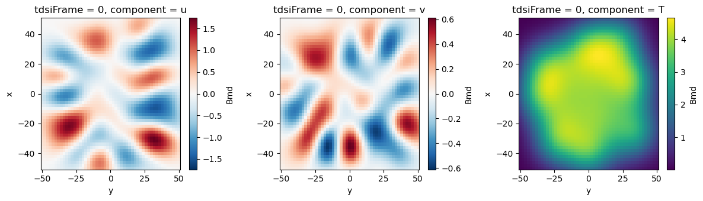
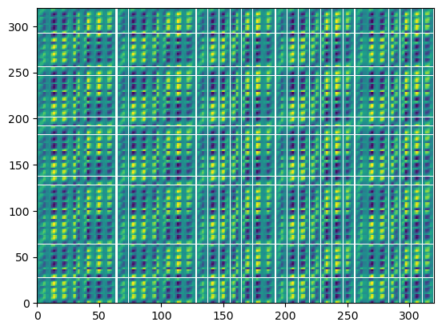

%load_ext autoreload
%autoreload 2
# hardware
import os
# analysis
import xarray as xr
# vis
import matplotlib.pyplot as plt
plt.style.use('seaborn-v0_8-deep')
# Acoustic tomography package
import atom
# configuration object
from hydra import initialize, compose
from hydra.utils import instantiate
with initialize(version_base=None, config_path="../../conf/"):
cfg = compose(config_name="configs",)
Covariance Matrices#
The entire methology of time-dependent stochastic inversion (TDSI) hinges on defining an optimal inverse operator that maps the data vector (containing acoustic signal travel time esimates) onto the model space (where we want to retrieve fluctuating velocity and temperature. $\( \mathbf{m} = \mathbf{A}\mathbf{d} \)\( We define the operator \)\mathbf{A}$ considering the expected correlation between observed travel times and the background fluctating fields.
Note
Coming innovation in the development of covariance matrices is expected to increase the accuracy of the AT array retrievals and may also provide benefits to the resolved turbulent structures!
Instantiate atarray and constants objects#
These objects are used later in the development of the model grid and covariance matrices.
see
01_signalProcessingModule_20240410.ipynbfor guideance on the atarray object.see
03_bulkFieldEstimation_20240412.ipynbfor guideance on the linear system object.
## Array data
atarray = instantiate(cfg.atarray)
atarray.setupPathIntegrals()
## Constants
constants = instantiate(cfg.constants)
## Bulk flow linear system
### instatiate from saved data
ls = atom.backgroundFlow.linearsystem.LinearSystem.from_netcdf('../bulkField_example_data.nc')
Model Grid object#
The model grid defines the domain where fluctuating velocity and temperature fields are to be retrieved. Inputs are:
nModelPoints(X|Y): the integer number of points in the X (easting) and Y (northing) directions.modelLims(X|Y): the (min, max) domain limits in the X (easting) and Y (northing) directions. Should be an iterable (list, tuple, array, etc.) Model grid points are stacked into a dimension denotedmodelXYwith dimension \(J = m_x \times m_y\).
# ModelGrid object
mg = atom.fluctuatingField.ModelGrid(
nModelPointsX=51,
nModelPointsY=51,
modelLimsX=np.array([-50,50]),
modelLimsY=np.array([-50,50])
)
mg.buildModelGrid()
mg.ds
<xarray.Dataset> Dimensions: (variable: 2, modelXY: 2601, x: 51, y: 51) Coordinates:
variable (variable) <U1 ‘x’ ‘y’
x (modelXY) float64 -50.0 -50.0 -50.0 -50.0 … 50.0 50.0 50.0 50.0
y (modelXY) float64 -50.0 -48.0 -46.0 -44.0 … 44.0 46.0 48.0 50.0
modelXY (modelXY) object MultiIndex Data variables: modelGrid (variable, x, y) float64 -50.0 -48.0 -46.0 … 50.0 50.0 50.0 Attributes: description: Model grid for TDSI solution unit: m nx: 51 ny: 51
Covariance Matrix object#
Configuration data comes from the hydra configuration object.
Default values:
sigmaT: 0.14, standard devaition of the temperature fluctuationslT: 15.0, length scale of the temperature fluctuationssigmaU: 0.72, standard devaition of the u velocity fluctuationssigmaV: 0.42, standard devaition of the v velocity fluctuationsl: 15.0, length scale of the velocity fluctuationstimeDelay: 0.0, time delay between successive frames. Will be updated to generalize to variable time delays between framesnFrames: 0, the number of additional frames considered in the covariance matrices. A value of 0 implies simple stochastic inversion without time dependence.alignment: “center”, alignment of frames in the covariance matrices (also accepts “forward” or “backward”)advectionScheme: “stationary”, simplifying assumption of statistical stationarity for advection (constant advection velocity and time delay). Will be updated to include a “direct” method where the advection velocity varies between frames.
This example updates nFrames to 2 to use one frame before and one frame after the target frame in the fluctuating field retrieval.
# cfg.covariancematrix['nFrames'] = 2
cm = atom.fluctuatingField.CovarianceMatrices(
cfg.covariancematrix,
mg.ds,
atarray.ds,
ls.ds,
)
cm.assembleTDSICovarianceMatrices()
# cm.to_pickle(f'../covarianceMatrices_nF={cfg.covariancematrix.nFrames}_example.pk')
# cm = atom.fluctuatingField.CovarianceMatrices.from_pickle('covarianceMatrices_nF=6.pk')
The model-data and data-data covariance matrices \(B_{md}\) and \(B_{dd}\) rely on an assumed (or imposed) distribution of covariances. Covariance functions relate fluctuations between any two points \(\mathbf{r}\) and \(\mathbf{r^\prime}\) with a Gaussian distribution.
\(\begin{align} B^S_{TT} &= \sigma_T^2 \text{exp}\left( -\frac{(\mathbf{r} - \mathbf{r}^\prime)^2}{l_T^2}\right)\label{eq:corr1},\\ B^S_{uu} &= \sigma_u^2 \text{exp}\left( -\frac{(\mathbf{r} - \mathbf{r}^\prime)^2}{l^2}\right) \left( 1 - \frac{(y - y^\prime)^2}{l^2} \right)\label{eq:corr2},\\ B^S_{vv} &= \sigma_v^2 \text{exp}\left( -\frac{(\mathbf{r} - \mathbf{r}^\prime)^2}{l^2}\right)\left( 1 - \frac{(x - x^\prime)^2}{l^2} \right)\label{eq:corr3},\\ B^S_{uv} &= \sigma_u \sigma_v \text{exp}\left( -\frac{(\mathbf{r} - \mathbf{r}^\prime)^2}{l^2}\right) \left( \frac{(x - x^\prime)(y - y^\prime)}{l^2} \right)\label{eq:corr4}, \end{align}\)
Other distributions or covariance models can be added by replicating the structure found in CovarianceMatrix.covarianceFunction method. For heterogeneous fields, this function can be replaced by input data, so that \(B_{md}\) and \(B_{dd}\) map observed covariances to observed travel times directly.
When considering multiple frames, as in the TDSI, the second point \(\mathbf{R}^\prime\) takes into account advection by the mean velocity over the time delta between frames. The covariance matrix calculation is centered by default, meaning advection takes place in a forward and a backward sense collecting the frames \([\tau - N/2 * \Delta t,...,\tau,...,\tau + N/2* \Delta t]\). The algorithm takes into account edge cases at the beginning and end of the set of frames. These are defined in the stencil and frameSets attributes.
fig, ax = plt.subplots(2,2, figsize=(8,6))
ax=ax.flatten()
pointID = np.random.randint(len(cm.ds.modelXY))
cm.ds.B_uu.isel(modelXY=pointID).T.plot(ax=ax[0])
cm.ds.B_vv.isel(modelXY=pointID).T.plot(ax=ax[1])
cm.ds.B_uv.isel(modelXY=pointID).T.plot(ax=ax[2])
cm.ds.B_TT.isel(modelXY=pointID).T.plot(ax=ax[3])
fig.tight_layout()

Model-data covariance matrices#
The model data covariance matrix describes correlation between observed travel times and the modeled turbulence fields. \(\mathbf{B_{md}}\) has a size of \([ N\times I, 3\times J]\) considering \(N\) frames in the TDSI, \(I\) acoustic travel paths, and \(J\) modeled points for each of the three variables (\(u\), \(v\) and \(T\)).
\(\begin{eqnarray} \mathbf{B}_{\mathbf{m}_j\mathbf{d}_{0i}}(t_1, t_2) &=& \langle m_j(t_1) d_{0i}(t_2) \rangle\\ &=& \int_{L_i} \left( \frac{c_0(t_2)}{2T_0(t_2)} \langle m_j(t_1) T(\mathbf{r},t_2) \rangle + \langle m_j(t_1) u(\mathbf{r},t_2)\rangle \text{cos}~\phi_i + \langle m_j(t_1) v(\mathbf{r},t_2)\rangle \text{sin}~\phi_i \right) dl\\ &=& \begin{cases} \int_{L_i} \left( \frac{c_0(t_2)}{2T_0(t_2)}B_{TT}(\mathbf{r}_j, t_1; \mathbf{r}, t_2) \right) dl, & \text{if } 1 \le j \le J \\ \int_{L_i} \left(B_{uu}(\mathbf{r}_j, t_1; \mathbf{r}, t_2) \text{cos}~\phi_i + B_{uv}(\mathbf{r}_j, t_1; \mathbf{r}, t_2) \text{sin}~\phi_i \right) dl, & \text{if } J+1 \le j \le 2J \\ \int_{L_i} \left(B_{vu}(\mathbf{r}_j, t_1; \mathbf{r}, t_2) \text{cos}~\phi_i + B_{vv}(\mathbf{r}_j, t_1; \mathbf{r}, t_2) \text{sin}~\phi_i \right) dl, & \text{if } 2J+1 \le j \le 3J \end{cases} \end{eqnarray}\)
cm.ds['modelXY'] = mg.ds.modelXY
fig, ax = plt.subplots(1,3, figsize=(12,3.5))
cm.ds.Bmd.sel(component='u', tdsiFrame=0).sum(dim='pathID').unstack().plot(ax=ax[0])
cm.ds.Bmd.sel(component='v', tdsiFrame=0).sum(dim='pathID').unstack().plot(ax=ax[1])
cm.ds.Bmd.sel(component='T', tdsiFrame=0).sum(dim='pathID').unstack().plot(ax=ax[2])
fig.tight_layout()

Data-data covariance matrix#
The data-data covariance matrix describes auto correlation between observed data. \(\mathbf{R_{dd}}\) has a size of \([ N\times I, N\times I]\) considering \(N\) frames in the TDSI and \(I\) acoustic travel paths.
\(B_{dd} = \langle d_i(t_1) d_p(t_2) \rangle = \iint_{L_i, L_p}\frac{c_0(t_1) c_0(t_2)}{4 T_0(t_1)T_0(t_2)}B_{TT} + B_{uu} \cos\varphi_i\cos\varphi_p + B_{vv} \sin\varphi_i\sin\varphi_p + B_{uv} \cos\varphi_i\sin\varphi_p + B_{vu} \sin\varphi_i\cos\varphi_p d l_i d l_p\)
plt.pcolor(cm.ds.Bdd.unstack().stack(NI = ['tdsiFrame', 'spk','mic'],
NI_duplicate = ['tdsiFrame_duplicate', 'spk_duplicate', 'mic_duplicate']).values)
<matplotlib.collections.PolyCollection at 0x7fea32304310>
